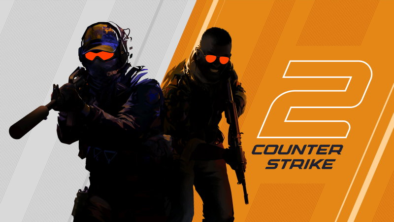

Zacznijmy od tego Co to CS:GO?
Counter-Strike: Global Offensive (CS:GO) to jedna z najpopularniejszych gier FPS na świecie. Counter-Strike 2 to najnowsza odsłona legendarnej serii gier FPS od Valve, która zyskała ogromną popularność wśród graczy na całym świecie. Gra jest oparta na nowym silniku Source 2, co zapewnia lepszą grafikę, realistyczną fizykę i ulepszoną rozgrywkę.

Na czym polega gra CS:GO?
Counter-Strike: Global Offensive, podobnie jak poprzednie gry z serii Counter-Strike, jest wieloosobową grą z gatunku strzelanek pierwszoosobowych, skupiającą się na wykonywaniu zadań. Dwie przeciwne drużyny z postaciami terrorystów i antyterrorystów rywalizują w różnych trybach gry wykonując określone cele...

Jakie minimalne wymagania sprzętowe trzeba posiadać?
- Procesor: 4-wątkowy Intel® Core™ i5-750 lub lepszy
- Karta Graficzna: min. 1 GB, Shader Model 5.0, DirectX 11
- DirectX: Wersja 11 lub wyższa
- Pamięć RAM: 8 GB
- Miejsce na Dysku: 85 GB
- System: Windows® 10 lub wyżej